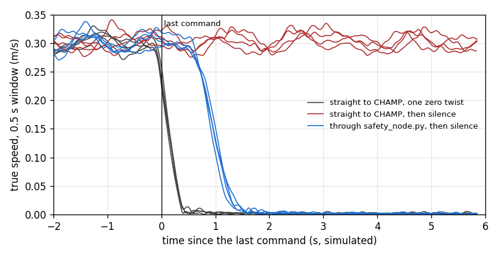
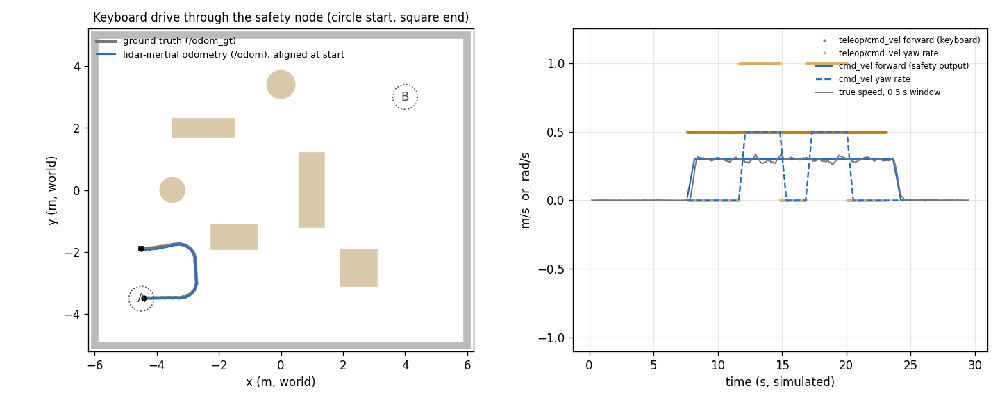

Move it · Project 2
Teleoperation with a safety layer
Goal
Drive the Go2 from the keyboard, then put a small node of your own between the keyboard and the robot. The node limits speed
and acceleration and stops the robot when commands stop arriving (a dead-man timeout). CHAMP, the gait controller, has no such
timeout: it walks on the last /cmd_vel it received for as long as nothing else arrives. You measure how long the robot takes
to stand still after the last command, with and without your node, and you unit-test the limiter without ROS.
What you will learn
- Running
teleop_twist_keyboardand remapping its output topic. - Why a keyboard teleop alone is unsafe on this robot, measured on the simulator's ground truth.
- Writing a node that sits in a command chain: subscribe, filter, republish on a timer.
- Velocity clipping, an acceleration (slew-rate) limit and a dead-man timeout, and how to predict the stopping distance they give.
- Keeping the logic in a plain Python class so
pytestcan test it with no ROS graph. - Handling Ctrl-C and SIGTERM in an rclpy node so it can send a last zero before it exits.
Before you start
Do project 1 first: it shows how to start the stack, read /odom_gt, and why a zero twist is the
only way to stop CHAMP. Chapter 7 has the CHAMP limits used below (0.3 m/s forward, 0.25 m/s
sideways, 0.5 rad/s yaw).
Every terminal starts with:
cd go2-nav-sim
source env.sh
and the stack must be running (scripts/up.sh, which prints stack up). This project only uses the simulator; Nav2 can stay up
because it publishes on /cmd_vel only while it has a goal. In my runs with Nav2 up and idle, a robot left walking was still
walking 6 s later, so nothing else sent it a zero.
The scripts are plain Python files and need no build: python3 projects/p02_teleop-and-safety/<script>.py.
| File | What it is |
|---|---|
limiter.py |
the limiter and dead-man logic, no ROS |
safety_node.py |
the node: teleop/cmd_vel in, cmd_vel out |
test_limiter.py |
7 unit tests for limiter.py |
measure_stop.py |
walks forward, goes silent, measures the time to standstill from /odom_gt |
key_drive.py |
types keys into teleop_twist_keyboard from a script, so a keyboard drive can be repeated |
record_reliable.py |
projects/common/record_cam.py with a reliable subscription (see If it goes wrong) |
plot.py |
the two figures, and the summary of all stop measurements |
results/ |
my CSVs and bags behind every number below; your own runs go to ~/p02_runs (step 6), so they never overwrite these |
Steps
1. Check that the keyboard teleop is installed
ros2 pkg executables teleop_twist_keyboard
Expected:
teleop_twist_keyboard teleop_twist_keyboard
Check: if the line is missing, install it with sudo apt install ros-humble-teleop-twist-keyboard.
2. Drive without a safety layer
ros2 run teleop_twist_keyboard teleop_twist_keyboard
It prints a key map. i walks forward, , backwards, j and l turn on the spot, u and o walk in an arc, k stops. It
starts at speed 0.5 turn 1.0, above CHAMP's limits; CHAMP clips them to 0.3 m/s and 0.5 rad/s.
Press i once and take your hands off the keyboard. The robot keeps walking. teleop_twist_keyboard publishes one message per
key event and nothing when no key is pressed, and CHAMP holds the last message. Press k to stop it.
Check: in a second terminal, ros2 topic hz /cmd_vel prints nothing while you do not touch the keyboard, and
ros2 topic echo --once /odom_gt --field pose.pose.position.x, run twice a few seconds apart, gives a larger number the second
time, until you press k.
Close the teleop with Ctrl-C (it sends a zero twist as it exits).
3. Run the unit tests
The limiter lives in limiter.py, which imports nothing from ROS. Test it first:
python3 -m pytest -q projects/p02_teleop-and-safety
Expected:
....... [100%]
7 passed in 0.24s
Check: the tests also pass in a shell where env.sh was not sourced, which shows they need no ROS.
4. Start the safety node
python3 projects/p02_teleop-and-safety/safety_node.py
Expected:
[INFO] [...] [cmd_safety]: teleop/cmd_vel -> cmd_vel v_max [0.3, 0.25, 0.5] a_max [0.5, 0.5, 1.0] timeout 0.6 s 20.0 Hz
Check, from another terminal:
ros2 node info /cmd_safety # Subscribers: /clock, /teleop/cmd_vel Publishers: /cmd_vel, ...
ros2 param get /cmd_safety timeout # Double value is: 0.6
ros2 topic info /cmd_vel -v | grep -c 'Node name: cmd_safety' # 1
The last command counts the publishers on /cmd_vel named cmd_safety; it must print 1. The full
ros2 topic info /cmd_vel -v lists more: with the stack from scripts/up.sh it printed Publisher count: 7 (cmd_safety,
velocity_smoother and five behavior_server entries, all from Nav2, which publish only while Nav2 has a goal) and
Subscription count: 1 (quadruped_controller_node, CHAMP). Seven is normal here; only cmd_safety appearing twice is a
problem (see If it goes wrong). Project 11 puts twist_mux in front
of CHAMP so that one node, cmd_safety, is the only publisher on /cmd_vel.
The node reads its parameters once, at start-up. To change one, stop the node and start it again with
--ros-args -p timeout:=0.3. Give floats as floats: -p "a_max:=[1, 1, 2]" stops the node with
InvalidParameterTypeException: ... of type 'INTEGER_ARRAY', expecting type 'DOUBLE_ARRAY'; write -p "a_max:=[1.0, 1.0, 2.0]".
5. Drive through the safety node
Remap the teleop's output to the node's input:
ros2 run teleop_twist_keyboard teleop_twist_keyboard --ros-args -r cmd_vel:=teleop/cmd_vel
Hold i for a few seconds, then let go. The robot speeds up over about 0.6 s, walks, and stops about 1.3 s after you let go. The
safety node logs:
[WARN] [...] [cmd_safety]: no command for 0.6 s: stopping
Check: while you hold i, ros2 topic echo /teleop/cmd_vel --field linear.x shows 0.5 and
ros2 topic echo /cmd_vel --field linear.x shows 0.3: the node clipped the command.
Close the teleop with Ctrl-C. Leave the safety node running; steps 6 and 7 use it.
6. Measure the stopping time
Restart the stack so the robot is back on A, facing +x:
scripts/up.sh
Leave the safety node from step 4 running. The restart sets simulated time back to about 0, and the node logs that once:
[WARN] [...] [cmd_safety]: simulated time went back 42.5 s (simulator restarted): last command dropped
It then stays silent until a new command arrives on teleop/cmd_vel, so it does not interfere with the first two runs below, which
publish straight to /cmd_vel. If that line does not appear and the first two runs print standstill 0.00 s ... 0.00 m walked,
you are running an older copy of safety_node.py without the clock check: it kept resending its last zero after the restart
(If it goes wrong). Ctrl-C it, start it again, and repeat the runs.
Your results go to ~/p02_runs, outside the repository, so my files in results/ and figures/ stay as they are:
mkdir -p ~/p02_runs
The three runs below walk about 6 m in total along y = -3.5, which is free of obstacles up to x = 5.5. Each run walks at 0.3 m/s
for 4 s of simulated time, then either sends one zero twist or goes silent, then watches the ground truth for 6 s. At the end the
script always sends a zero on /cmd_vel.
python3 projects/p02_teleop-and-safety/measure_stop.py --topic /cmd_vel --zero --csv ~/p02_runs/direct_zero.csv
python3 projects/p02_teleop-and-safety/measure_stop.py --topic /cmd_vel --csv ~/p02_runs/direct_silence.csv
python3 projects/p02_teleop-and-safety/measure_stop.py --topic /teleop/cmd_vel --csv ~/p02_runs/safety_silence.csv
Expected, one line per run (my fourth run of each, made straight after a restart with the safety node left running):
/cmd_vel zero=True: standstill 0.38 s after the last command, 0.04 m walked in that time
/cmd_vel zero=False: NOT stopped 6.0 s after the last command; walked 1.85 m since, speed at end 0.286 m/s
/teleop/cmd_vel zero=False: standstill 1.28 s after the last command, 0.29 m walked in that time
Your numbers will differ by a few hundredths; the results table has all my runs.
Check:
python3 projects/p02_teleop-and-safety/plot.py --dir ~/p02_runs
prints one line per CSV in ~/p02_runs and writes ~/p02_runs/stop_time.png. Without --dir, plot.py reads my CSVs in
results/ and rewrites figures/stop_time.png.
7. Record a drive and plot it
Restart the stack once more, so the drive starts on A facing +x, where the scripted drive below was planned. The safety node can stay running; it logs the time jump again.
scripts/up.sh
Four terminals:
python3 projects/p02_teleop-and-safety/safety_node.py # terminal 1, already running from step 4
ros2 bag record -o ~/p02_runs/drive_bag /odom_gt /odom /cmd_vel /teleop/cmd_vel # terminal 2
python3 projects/p02_teleop-and-safety/record_reliable.py ~/p02_runs/teleop_drive.mp4 \
--topic /spectator/cam/image_raw # terminal 3
python3 projects/p02_teleop-and-safety/key_drive.py "i 4, u 3.2, i 2, u 3.2, i 3, - 3" # terminal 4
ros2 bag record refuses to write into a folder that already exists (Output folder '...' already exists.), so delete or rename
~/p02_runs/drive_bag before a second recording.
Terminal 4 runs my drive from a script, so it can be repeated. Each item is a key and how long to hold it, in simulated seconds;
- releases all keys. From A it walks east along y = -3.5, arcs left to face north, walks north, arcs left to face west, walks
west and lets go. The robot's centre passes 0.58 m from the wood pallet, the closest obstacle. It prints one line per item, with
the simulated time at which the item started (yours will differ):
28.95 i for 4.0 s
32.96 u for 3.2 s
36.18 i for 2.0 s
38.19 u for 3.2 s
41.40 i for 3.0 s
44.42 - for 3.0 s
To drive by hand instead, run ros2 run teleop_twist_keyboard teleop_twist_keyboard --ros-args -r cmd_vel:=teleop/cmd_vel in
terminal 4 and finish by letting go of all keys. At 0.3 m/s and 0.5 rad/s, i 1 is about 0.3 m and j 3.2 about a quarter
turn. A hand drive gives a different path, so the numbers below will not match.
When the robot has stood still for 3 s, Ctrl-C terminals 2 and 3. Terminal 3 prints the frame count
(.../teleop_drive.mp4: 292 frames for my drive). Plot:
python3 projects/p02_teleop-and-safety/plot.py ~/p02_runs/drive_bag --dir ~/p02_runs
# drive: 29.8 s simulated, true path 4.91 m, odometry end error 0.070 m, end at (-4.51, -1.89)
The duration counts from the start of the bag, so it includes the time you took to start terminal 4 (7.6 s in my run); the path length and the end point do not depend on it.
The video shows the whole arena. To crop and enlarge it 2× around the drive, as in media/teleop_drive.mp4:
ffmpeg -i ~/p02_runs/teleop_drive.mp4 -vf "crop=480:270:100:160,scale=960:540" -c:v libx264 -crf 26 -pix_fmt yuv420p \
~/p02_runs/teleop_drive_crop.mp4
crop=480:270:100:160 keeps a 480 × 270 pixel window whose top-left corner is at pixel (100, 160) of the 960 × 540 frame, the
south-west part of the arena. For a drive elsewhere, move the corner.
Check: ~/p02_runs/teleop_drive.png exists, and in its right panel the keyboard dots stop before the blue output line ramps down.
8. Stop
Ctrl-C the safety node. It publishes one zero twist before it exits, so the robot is left standing even if it was walking. Then:
scripts/stop.sh
How the code works
limiter.py
The class keeps the last command (target), the last output (out) and the time of the last command (t_cmd):
def command(self, t, cmd):
"""A new command arrived at time t (seconds)."""
self.target = tuple(clamp(c, -m, m) for c, m in zip(cmd, self.v_max))
self.t_cmd = t
def stale(self, t):
# t < t_cmd: the clock went back (the simulator was restarted), so the last command belongs to another run
return self.t_cmd is None or t < self.t_cmd or t - self.t_cmd > self.timeout
def step(self, t):
"""Output for time t, or None when there is nothing to send (idle and already stopped)."""
if self.t_cmd is not None and t < self.t_cmd:
self.t_cmd = None # clock went back: forget the old command, or it revives when t passes t_cmd again
target = (0.0, 0.0, 0.0) if self.stale(t) else self.target
dt = 0.0 if self.t_out is None else max(0.0, t - self.t_out)
self.t_out = t
# move each axis towards its target by at most a_max * dt
self.out = tuple(o + clamp(g - o, -a * dt, a * dt) for o, g, a in zip(self.out, target, self.a_max))
if self.stale(t) and self.out == (0.0, 0.0, 0.0):
self.zeros_sent += 1
# ponytail: a few zeros, then silence, so a stopped limiter never fights another /cmd_vel publisher (Nav2)
return self.out if self.zeros_sent <= 5 else None
self.zeros_sent = 0
return self.out
Three rules, applied to each axis (forward, sideways, yaw) separately:
- Velocity limit: a command is clipped to ±
v_maxwhen it arrives. The defaults equal CHAMP's own limits, so the clip changes nothing CHAMP would not change, but the output now shows what the robot will really be asked to do. - Acceleration limit: each step moves the output towards the target by at most
a_max · dt. With 0.5 m/s² and a 20 Hz timer that is 0.025 m/s per step, so 0 to 0.3 m/s takes 0.3 / 0.5 = 0.6 s. Reversing from +0.3 to -0.3 takes 1.2 s and passes through zero. - Dead-man timeout: if no command has arrived for
timeoutseconds, the target becomes zero and the acceleration limit ramps the output down.
When the output reaches zero the node sends five zeros and then goes quiet. A node that kept sending zeros forever would fight any
other publisher on /cmd_vel, such as Nav2 in later projects.
A restart of the simulator sets simulated time back to about 0 while the node keeps running. My first version only had the
timeout test t - t_cmd > timeout: after a restart t - t_cmd was negative, so the old command counted as fresh, and the node
published its last command (a zero) at 20 Hz until the new clock passed the old t_cmd. That zero overrode every other
publisher on /cmd_vel. Now a clock that goes back makes the command stale and step() forgets it, so the node stays silent
until a new command arrives. A first fix that only changed stale() was not enough: the old command came back for 0.6 s when the
new clock passed the old t_cmd, and the node logged no command for 0.6 s: stopping 52 s (wall clock) after the restart. The unit test
test_clock_jump_back_is_stale covers both.
From the three rules, the robot stops after it has walked for the timeout at full speed and then decelerated:
t_stop ≈ T + v / a + t_CHAMP d_stop ≈ v·T + v² / (2a) + d_CHAMP
With v = 0.3 m/s, T = 0.6 s, a = 0.5 m/s² and CHAMP's own response to a zero (0.37 s, 0.04 m, the first row of the results table), that gives 1.57 s and 0.31 m. I measured 1.28 to 1.43 s and 0.288 to 0.295 m. The distance agrees. The time is about 0.2 s shorter than the sum, which suggests that CHAMP's delay does not simply add at the end of a slow ramp (my inference: chapter 7 measured that CHAMP walks slower than commanded at small speeds, 0.063 m/s for a 0.1 m/s command, so the robot drops below the 0.02 m/s standstill threshold before the command reaches zero).
The same holds for turning. A turn key released at 0.5 rad/s keeps the robot turning for 0.5 · 0.6 + 0.5² / (2 · 1.0) = 0.43 rad,
about 24°, before it stops (computed from the formula, not measured). Press k when the heading is right instead of letting go.
safety_node.py
The node is a thin shell around the limiter: a subscription stores commands, a 20 Hz timer publishes the output.
def on_cmd(self, m):
self.lim.command(self.now(), (m.linear.x, m.linear.y, m.angular.z))
def on_timer(self):
t = self.now()
if self.lim.t_out is not None and t < self.lim.t_out:
self.get_logger().warn(f'simulated time went back {self.lim.t_out - t:.1f} s (simulator restarted): '
'last command dropped')
stale = self.lim.stale(t)
if stale and not self.was_stale:
self.get_logger().warn(f'no command for {self.lim.timeout} s: stopping')
self.was_stale = stale
out = self.lim.step(t)
if out is not None:
self.send(*out)
Points worth checking:
- The output is published by the timer, not by
on_cmd. A dead-man must act when nothing arrives, and only a timer runs then. - Time is simulated time (
use_sim_timeis set in the constructor). The timeout is measured on the same clock the robot moves on. If Gazebo runs at half speed, 0.6 s of simulated time is 1.2 s on your watch. - The timeout must be longer than the gap between key events while a key is held. A held key repeats only after a delay: 500 ms
on my machine (
xset qprintsauto repeat delay: 500 repeat rate: 33). With a timeout below that, the robot jerks at every key press (exercise 3). main()takes over SIGINT and SIGTERM from rclpy (SignalHandlerOptions.NO) and turns both intoKeyboardInterrupt. rclpy's own handler shuts the context down on SIGINT (record_cam.py, which keeps it, failed on Ctrl-C withthe given context is not valid), and a publish needs a valid context.
rclpy.init(signal_handler_options=SignalHandlerOptions.NO)
for s in (signal.SIGINT, signal.SIGTERM):
signal.signal(s, signal.default_int_handler)
node = Safety()
try:
rclpy.spin(node)
except KeyboardInterrupt:
pass
node.send(0.0, 0.0, 0.0) # leave the robot standing, not walking on our last output
measure_stop.py
It records /odom_gt positions and computes the speed over a sliding 0.5 s window. The robot counts as standing from the first
window, after the last command, whose speed is below 0.02 m/s and after which no window is above it:
for t, v in speeds:
if t < t_last:
continue
if v >= STILL:
t_stop = None
elif t_stop is None:
t_stop = t
Speed from positions, not from the twist field, because the legs make the trunk sway. Standing still, this windowed speed was at most 0.0054 m/s (mean 0.0020 m/s over 6 s), well under the 0.02 m/s threshold. Each speed is stamped at the centre of its window, so the times have a resolution of about a quarter of a second.
key_drive.py
teleop_twist_keyboard reads single key presses from its terminal. key_drive.py gives it a pseudo-terminal (pty.openpty())
and writes a key every 1/30 s while a key is "held", which is what the X server does with a held key. The durations are measured on
/clock, read by a node spinning in a second thread. On exit it sends Ctrl-C, so teleop publishes its zero and quits.
Results
Measured in two sessions on a shared machine. In the first, two other Gazebo instances were running, the load average was between
56 and 126, and gz stats showed a real-time factor between 0.33 and 0.90. The second session (the fourth run of each case in the
table, and the drive) followed the steps in order, with the safety node left running across both restarts; the load average was
about 60 (uptime: 59.20, 60.89, 61.82). All times are simulated seconds.
Stopping after the last command, walking forward at 0.3 m/s (measure_stop.py, step 6; the runs of each case were done in
different parts of the arena; numbers from python3 projects/p02_teleop-and-safety/plot.py, files results/<case>.csv,
<case>_2.csv, _3 and _4):
| Commands reach CHAMP | Ends with | Time to standstill (4 runs) | Distance walked after the last command |
|---|---|---|---|
| directly | one zero twist (--zero, the k key) |
0.39, 0.35, 0.37, 0.38 s | 0.041, 0.035, 0.039, 0.037 m |
| directly | silence | not stopped after 6.1 s; speed at the end 0.303, 0.306, 0.304, 0.286 m/s | 1.84, 1.84, 1.84, 1.85 m in 6.1 s |
through safety_node.py (defaults) |
silence | 1.43, 1.33, 1.31, 1.28 s | 0.295, 0.293, 0.288, 0.288 m |

Without the node, silence is not a stop: in all four runs the robot was still walking at 0.286 to 0.306 m/s 6 s after the last command. With the node, silence stops the robot in 1.28 to 1.43 s and 0.29 m; a deliberate zero is still the fastest stop.
The keyboard drive in step 7 (results/drive_bag, the scripted drive from A): 29.8 s from the start of the bag, of which the first
7.6 s were before the first key, and 4.91 m of true path. The keyboard sent 0.5 m/s and 1.0 rad/s; the node passed on at most
0.3 m/s and 0.5 rad/s. key_drive.py types 30 keys per wall-clock second; they arrived at 41.0 messages per simulated second
because the simulation ran slower than real time. After the last key event the node's last 0.3 m/s output came 0.57 s later, the
output reached zero 1.22 s after it, and the robot was standing at 1.34 s. In my first session's drive (a different path, now
replaced) the same three numbers were 0.56, 1.16 and 1.32 s.

The video is the same drive from the spectator camera, recorded with record_reliable.py (292 frames, 29.2 s, simulated time) and
cropped with the ffmpeg command in step 7. The robot walks east from A, turns north and then west, and stops on its own after
the last key.
The blue odometry line ends 0.070 m from the truth on this drive. In four drives in the first session that end error ranged from 0.008 m (right after a restart) to 0.727 m (after the robot had stood for about 10 minutes, at a real-time factor of 0.36). The estimator is the subject of chapter 9; this project uses ground truth for every number above.
Unit tests: python3 -m pytest -q projects/p02_teleop-and-safety gives 7 passed. They check the clip, the ramp
(the first step is exactly a_max · dt, no step is larger, and 0.3 m/s is reached), the timeout (output held for 0.6 s, ramps to
zero by 1.2 s, five zeros, then nothing), restarting after a timeout, silence before the first command, a reversal through
zero in 1.2 s, and silence after the clock goes back (a simulator restart), also when the new clock passes the old command time.
Try this
- Predict, then measure, the stop with
timeout:=0.3anda_max:=[1.0, 1.0, 2.0]. Restart the node withpython3 projects/p02_teleop-and-safety/safety_node.py --ros-args -p timeout:=0.3 -p "a_max:=[1.0, 1.0, 2.0]"and run the third command of step 6 with a new CSV name, such as--csv ~/p02_runs/ex1_fast_stop.csv.
Answer: the formula gives 0.3 · 0.3 + 0.3² / (2 · 1.0) + 0.04 = 0.175 m. I measured
standstill 0.82 s after the last command, 0.17 m walked in that time (results/exercises/ex1_fast_stop.csv). Halving the
timeout and doubling the deceleration saved 0.12 m and 0.5 to 0.6 s. The cost is exercise 3.
- Kill the safety node with
kill -9while the robot walks through it. Startpython3 projects/p02_teleop-and-safety/measure_stop.py --topic /teleop/cmd_vel --hold 3 --watch 3, and as soon asros2 topic echo /cmd_vel --field linear.xshows 0.3, runkill -9 $(pgrep -f safety_node.py)in another terminal. What does the robot do, and why does Ctrl-C not have the same effect?
Answer: it walks on. I measured NOT stopped 3.0 s after the last command; walked 0.88 m since, speed at end 0.283 m/s
(results/exercises/ex2_kill9.csv); only the zero that measure_stop.py sends at the end stopped it. SIGKILL cannot be caught,
so the node never sends its final zero, and CHAMP holds the last output. Ctrl-C is caught, and the node publishes a zero before
it exits (checked with ros2 topic echo /cmd_vel, which printed x: 0.0). A dead-man protects against a silent teleop, not
against its own death. That needs a timeout in the last link, the controller itself, which CHAMP does not have.
- Set the timeout below the keyboard's repeat delay,
--ros-args -p timeout:=0.3, holdiin the teleop terminal and watchros2 topic echo /cmd_vel --field linear.x. Then do the same with the default 0.6 s.
Answer: with 0.3 s the output rises, falls back before the key starts repeating, then rises again, so every key hold starts
with a speed command that dips. I emulated the 500 ms repeat delay with
key_drive.py "i 0.04, - 0.5, i 2, - 1.5" and recorded /cmd_vel (results/exercises/ex3_timeout_0.3 and ex3_timeout_0.6,
bag times are wall-clock). With 0.3 s the output went 0.025, 0.075, 0.125, 0.175, then down to 0.125 and 0.075, then up again
and reached 0.3 m/s 1.33 s after the first key event. With 0.6 s it rose without a dip and reached 0.3 m/s at 0.82 s. The
timeout must exceed the longest normal gap between commands from your input device.
If it goes wrong
| Symptom | Cause | Fix |
|---|---|---|
/cmd_vel shows two interleaved ramps (0.25, 0.3, 0.2, 0.3, 0.15, ...) and the stop takes longer than expected |
Two safety nodes were running. My first version kept rclpy's default SIGINT handling; started in the background with &, the process inherits SIGINT as ignored, so kill -INT did nothing and the old node kept publishing next to the new one |
ros2 topic info /cmd_vel -v \| grep -c 'Node name: cmd_safety' prints 2 instead of 1. (The total Publisher count is 7 with Nav2 up, so do not go by it.) Stop the extra node. safety_node.py now installs its own SIGINT and SIGTERM handlers |
After scripts/up.sh, measure_stop.py --topic /cmd_vel prints standstill 0.00 s ... 0.00 m walked and the robot never moves |
A safety node from before the restart, of the version without the clock-jump check. The restart sets simulated time back to about 0; that version treated its last command (the teleop's final zero) as fresh and republished it at 20 Hz until the new clock passed the old command time, overriding the 0.3 m/s | Use the current safety_node.py, which logs simulated time went back ... last command dropped and stays silent. With an old copy, Ctrl-C the node and start it again after every scripts/up.sh |
record_cam.py writes a video of 1 to 3 frames |
It subscribes best effort. A 960 × 540 image is 1.5 MB, sent in many fragments; on my loaded machine a best-effort subscriber received 1 spectator image in 25 s and a reliable one 116 | Use record_reliable.py (same arguments). Project 1 has the same fix as an edit to record_cam.py |
The robot stands still while /cmd_vel says 0.3 m/s |
It walked into an obstacle. In one of my drives the robot hit the orange cylinder; its true speed fell to about 0.03 m/s while the command stayed at 0.3 | Neither the teleop nor the safety node looks at the sensors. Back off with ,, or turn away with j or l |
pytest stops with ModuleNotFoundError: No module named 'rclpy' while collecting stop_test.py |
pytest collects test_*.py and *_test.py. The measuring script was first called stop_test.py, so pytest imported it, and it imports rclpy |
Name scripts so they match neither pattern; it is now measure_stop.py |
key_drive.py ends with terminate called without an active exception and a core dump |
The /clock node was spinning in a thread when Python exited |
Call rclpy.try_shutdown(), which makes rclpy.spin return, then join() the thread, as the script now does |